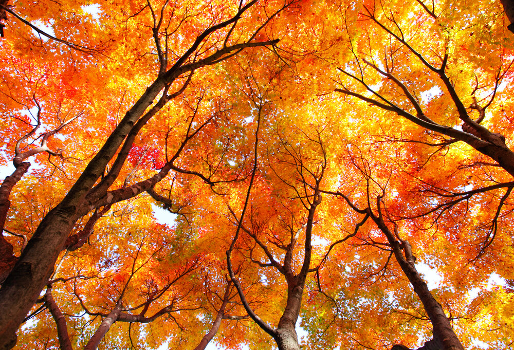

de originele foto.
De origenele foto heeft veel detail, na een compression heeft de foto evenveel detail en is de grootte gelijk gebleven. Dit is 90% van de oorspronkelijke kwaliteit.
De foto staat nu op 70% van het origineel. De afbeelding is nu een stuk waziger/meer pixelated. De grootte ging ook naar beneden met 341kB.
De foto staat nu op 40% van de kwaliteit van de oorspronkelijke foto. De foto is nu echt wazig en pixelated. De grootte is nog slechts 116kB.